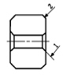
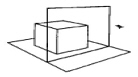
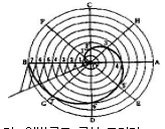
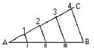

컴퓨터그래픽스운용기능사 (2005-01-30 기출문제)
1과목: 산업디자인 일반
1. 인테리어 디자이너의 역할을 설명한 것으로 거리가 먼 것은?
- 시공보다는 디자인에 중점을 둔다.
- 내부 공간, 가구, 조명, 주위환경 등을 디자인하고 기획한다.
- 디자인 의뢰자의 의견을 최대한 고려하여 디자인한다.
- 신체 부자유자를 위한 세심한 고려가 필요하다.
(정답률: 82%)

2. 옥외 공원, 각종 가로(街路)를 하나의 공간으로 보고 이것을 구성하는 여러 가지 요소를 가구로 간주하여 옥외의 생활환경에 맞도록 디자인하여야 하는 것은?
- 점포디자인
- 스트리트퍼니처
- 가구디자인
- 인테리어
(정답률: 86%)
3. 윌리엄 모리스의 미술공예운동이 전개되게 된 동기가 되었던 세계 최초의 산업 대박람회는?
- 런던 박람회
- 파리 엑스포
- 시카고 박람회
- 프랑크푸르트 박람회
(정답률: 78%)
4. 다음 선의 느낌을 나타낸 것 중 수직선에 대한 느낌으로 가장 알맞은 것은?
- 안정감, 친근감, 평화스러운 느낌
- 엄숙함, 강직함, 긴장감, 준엄한 느낌
- 움직임, 활동감, 불안정한 느낌
- 우아하고 부드러운 느낌
(정답률: 85%)
5. 산업디자인에서 스케치의 역할과 거리가 가장 먼 것은?
- 의도한 형태의 포착
- 의도한 형태를 발전적으로 전개
- 의도한 형태를 확인 및 평가
- 의도한 형태의 명암, 재질감의 표현으로 시각적인 입체화
(정답률: 69%)
6. 디자인에서 사용자 편의에 중점을 둔 인간공학적(Ergonomics) 요소란?
- 규모가 비교적 작은 일상 용품을 계획하는 것
- 아름답고 단순한 디자인 방법을 찾는 것
- 개인의 취향보다는 대중의 미의식에 맞추는 것
- 인간의 생리적, 심리적 특성에 맞도록 디자인하는 것
(정답률: 88%)
7. 다음 중 레이아웃의 중요성이 아닌 것은?
- 다른 광고와의 차별화 및 주목성을 높일 수 있다.
- 광고의 목적을 달성하도록 유도한다.
- 안정감을 줄 수 있도록 한다.
- 화려함을 강조하여야 한다.
(정답률: 89%)
8. 멤피스 그룹이 대표적인 경우로 기능주의에 입각한 모던디자인에 항거하며 인간의 정서적, 유희적 본성을 중시하는 경향을 지닌 양식은?
- 초현실주의
- 포스트모더니즘
- 구성주의
- 다다이즘
(정답률: 76%)
9. 투시도법이 성립되는 기본 요소가 아닌 것은?
- 눈의 위치
- 거리
- 현미경
- 대상물
(정답률: 91%)
10. 겉모양보다는 작동원리나 특수부품 등의 성능 시험을 위하여 제작되는 모형은?
- 스터디 모델(study model)
- 프레젠테이션 모델(presentation model)
- 프로토타입 모델(prototype model)
- 파일러트 모델(pilot model)
(정답률: 44%)
11. 다음의 디자인 문제 해결 과정 중 '필요성을 제시' 하는 과정은?
- 분석
- 계획
- 종합
- 평가
(정답률: 61%)
12. 실내 디자인에 드는 비용을 최소화하는 방안으로 틀린 것은?
- 시설비를 줄인다.
- 천장이나 벽면에는 요철을 적게 한다.
- 표준화된 치수의 제품과 규격화된 기성품을 활용한다.
- 실내 디자인의 효과를 높이기 위해서는 구입비와 유지 관리비를 최대한 많이 책정한다.
(정답률: 89%)
13. 포스터 광고의 특성(장점)과 가장 거리가 먼 것은?
- 위치의 선택이 자유롭다.
- 다른 광고와의 경쟁에서 항상 유리하다.
- 크기, 색상 선택이 자유롭다.
- 주목성을 높일 수 있다.
(정답률: 91%)
14. 시장조사의 기본적 방법이 아닌 것은?
- 조사법
- 실험법
- 사례 연구법
- 분석법
(정답률: 38%)
15. 다음 중 기본 형태에 대한 설명이 올바른 것은?
- 면 : 물체가 점유하는 공간
- 선 : 면의 한계 또는 교차
- 점 : 입체의 한계 또는 교차
- 입체 : 선의 한계 또는 교차
(정답률: 71%)
16. 다음 중 이념적 형태에 해당하는 것은?
- 자연형태
- 인위형태
- 현실형태
- 순수형태
(정답률: 74%)
17. 포장 디자인의 보호성과 보존성에 대한 올바른 설명은?
- 내용물의 보호가 포장의 주목적이다.
- 포장의 수명은 짧을수록 좋다.
- 보호 및 보존성은 상품의 종류와 관계없다.
- 상품의 종류와 포장재질은 무관하다.
(정답률: 85%)
18. 실내 디자인에 있어 미적 효용성을 더해주는 액센트적 역할을 하는 실내 소품 선택시 고려할 사항과 거리가 먼 것은?
- 실내 소품은 개인의 개성을 나타낼 수 있어야 한다.
- 소품을 지나치게 많이 사용하면 혼란을 주기 때문에 주의해야 한다.
- 소품은 주변 물건과의 디자인 성격을 잘 고려하여 적절하게 배치해야 한다.
- 소품을 거는 벽은 되도록 진한 원색이나 무늬가 많은 것을 사용하여 주의를 끌어야 한다.
(정답률: 89%)
19. 다음 중 편집디자인 요소로서 가독성과 불가분의 관계를 갖는 것은?
- 타이포그래피
- 포토그래피
- 컬러 디자인
- 플래닝
(정답률: 85%)
20. 다음 중 시장의 확보와 확대를 시도하는 것에 해당되지 않는 것은?
- 시장의 세분화
- 제품의 차별화
- 제품의 다양화
- 제품의 단순화
(정답률: 85%)
2과목: 색채 및 도법
21. 다음 도면의 치수 숫자(1, 2) 앞에 표기하여야 할 기호는?

- □
- t
- p
- c
(정답률: 65%)
22. 오스트발트와 먼셀 색체계의 공통점은?
- 20 색상환을 사용한다.
- 색상환에서 마주보는 색은 서로 보색관계이다.
- 색입체를 수직으로 절단하면 등명도면의 배열이 된다.
- 순색들의 채도단계는 각기 다르다.
(정답률: 68%)
23. 다음 중 중간 혼합과 거리가 먼 것은?
- 병치 가법
- 감법 혼색
- 점묘화
- 회전 혼합
(정답률: 63%)
24. 색채의 표면색(surface color)을 바르게 설명한 것은?
- 물체의 표면에서 빛이 반사하여 나타나는 색이다.
- 색유리와 같이 빛이 투과하여 나타나는 색을 말한다.
- 색채는 물체의 간접색과 인접색으로 나눌 수 있다.
- 분광 광도계와 같은 접안 렌즈를 통하여 보는 색이다.
(정답률: 79%)
25. 영.헬름홀쯔의 3원색설을 설명한 것 중 틀린 것은?
- 3원색은 빨강, 녹색, 청자이다.
- 노랑은 빨강과 녹색의 수용기가 같이 자극되었을 때 지각된다.
- 정상인과 색맹자의 색각현상을 설명하기 어려운 점이 있다.
- 감산 혼합의 이론과 일치되는 점이 있다.
(정답률: 57%)
26. 컴퓨터 작업시 한 색상을 장시간 사용하여 잔상현상이 나타나 눈이 피로해질 경우 어떤 색을 봄으로서 잔상 현상을 없앨 수 있는가?
- 보색
- 인접색
- 흰색
- 검정색
(정답률: 69%)
27. 먼셀 표색계에서 색의 3속성에 대한 설명으로 틀린 것은?
- 색의 3속성은 색상, 명도, 채도이다.
- 빨강의 순색은 5R4/14 로 표기한다.
- 명도가 2인 무채색은 N2로 표기한다.
- 색의 선명도와 채도는 반비례 관계에 있다.
(정답률: 71%)
28. 투시도법에 쓰이는 부호와 용어가 잘못된 것은?
- E : 시점 - 물체를 보는 사람 눈의 위치
- SP : 입점 또는 정점
- GL : 기선 - 화면과 지면이 만나는 선
- VP : 측점 - 정육면체의 측면 깊이를 구하기 위한 점
(정답률: 66%)
29. 다음 그림이 나타내는 투시도법의 원리는?

- 1 소점법
- 2 소점법
- 3 소점법
- 유각 투시법
(정답률: 53%)
30. 진출색이 지니는 조건이 아닌 것은?
- 따뜻한 색이 차가운 색보다 진출색이다.
- 밝은 색이 어두운 색보다 진출색이다.
- 채도가 낮은 색이 채도가 높은 색보다 진출색이다.
- 유채색이 무채색보다 진출색이다.
(정답률: 82%)
31. 다음 그림과 같은 곡선은?

- 인벌류트 곡선 그리기
- 등간각으로 나사선 그리기
- 아르키메데스 나사선 그리기
- 하트형 응용곡선 그리기
(정답률: 76%)
32. 등각 투상도에서 물체의 세 모서리가 이루는 등각도는?
- 30°
- 60°
- 90°
- 120°
(정답률: 81%)
33. 두 개 이상의 색을 기능과 목적 또는 효용에 따라 다양한 방법으로 배열하는 것은?
- 구성
- 배색
- 조화
- 조절
(정답률: 62%)
34. 다음 중 색의 연상과 상징이 잘못 연결된 것은?
- 노랑 - 희망, 광명, 유쾌, 경박
- 녹색 - 엽록소, 안식, 중성, 이상
- 자주 - 애정, 복숭아, 발정적, 창조적
- 검정 - 겸손, 우울, 점잖음, 무기력
(정답률: 66%)
35. 투상의 분류에 속하지 않는 것은?
- 정투상
- 사투상
- 평행투상
- 축측투상
(정답률: 53%)
36. 다음 평면도법은 무엇을 하기 위한 것인가?

- 직선의 2등분
- 직선의 n등분
- 수직선 긋기
- 각의 2등분
(정답률: 89%)
37. 색채, 질감, 형태, 무늬 등이 어떤 체계를 가지고 점점 커지거나 강해져 동적인 리듬감이 생겨나는 것은?
- 스케일
- 비례
- 대비
- 점이
(정답률: 77%)
38. 어떤 하나의 색상에서 무채색의 포함량이 가장 적은 색의 명칭은?
- 청색
- 순색
- 탁색
- 중간색
(정답률: 76%)
39. 색의 감정을 설명한 것 중 올바른 것은?
- 채도가 높은 색은 탁하고 우울하다.
- 채도가 낮을수록 화려하다.
- 명도가 낮은 배색은 어두우나 활기가 있다.
- 명도가 높은 색은 주로 밝고 경쾌하다.
(정답률: 81%)
40. 도면에 기입된 't30'의 의미는?
- 다듬질 치수
- 두께 치수
- 가공 치수
- 기준 치수
(정답률: 89%)
3과목: 디자인 재료
41. 물과 혼합하여 직접 사용하는 채색재료는?
- 유성안료
- 포스터칼라
- 래커
- 니스
(정답률: 84%)
42. 일정한 결정구조를 가지고 있는 금속을 녹아 있는 상태에서 1초 동안 100만℃로 급속 냉각시켜 새로운 결정 구조로 바꾼 금속은?
- 형상기억합금(Shape Memory Alloy)
- 소결 합금
- 수소 저장 합금
- 어모르퍼스 합금(Amorphous)
(정답률: 51%)
43. 핫 스프레이 도장에 대한 설명으로 틀린 것은?
- 건조에 충분한 시간이 필요하다.
- 광택이 좋다.
- 두꺼운 도막을 얻으려면 여러 번 칠해야 한다.
- 흐름, 풀림, 메마름이 적다.
(정답률: 55%)
44. 인화시에 사용하는 확대기의 종류 중 콘트라스트가 증가되는 것은?
- 산광식
- 집산광식
- 집광식
- 흑백확대기
(정답률: 55%)
45. 다음 중 흡수 가공 방법으로 만들어진 종이는?
- 크레이프지(Crepe Paper)
- 유산지
- 리트머스 시험지
- 바리타지(Baryta Paper)
(정답률: 62%)
46. 다음 중 불화수소, 불화암모늄의 혼합액 등을 이용하여 유리를 불투명한 상태로 가공, 장식효과를 높이게 해주는 가공법은?
- 커트 글래스
- 부식
- 샌드 블라스트
- 연마
(정답률: 40%)
47. 주로 담배, 식품, 화장품, 약품 등 작은 상자의 제조에 쓰이는 판지는?
- 백 보드
- P. E 보드
- 왁스 보드
- 마닐라 보드
(정답률: 55%)
48. 다음 연필의 종류 중 가장 진하고 무른 연필심은?
- 4H
- 2H
- HB
- 2B
(정답률: 80%)
4과목: 컴퓨터 그래픽스
49. 다음 중 동영상을 편집을 할 수 있는 가장 적당한 프로그램은?
- 포토샵
- 일러스트레이터
- 프리미어
- Quark 익스프레스
(정답률: 77%)
50. 컴퓨터로 제작한 컬러이미지를 출력하면, 모니터상의 색상과 출력된 지면상의 색상이 상당한 차이가 있는 이유와 가장 거리가 먼 내용은?
- 모니터의 칼라와 인쇄시 칼라 잉크의 차이
- 육안의 색상구분 범위가 컬러 인쇄되는 범위보다 좁기 때문에 생기는 차이
- 모니터의 색상 개멋(Color Gamut)과 컬러 분판 출력의 색상 표현 영역의 차이
- 컬러 출력시 CMY 컬러가 혼합되는 부분을 검정색으로 대치되는 변수 차이
(정답률: 53%)
51. 포스트스크립트와 유사하고 벡터와 비트맵 그래픽 모두를 표현할 수 있으며 어도비사의 아크로뱃(Acrobat)에서 사용되는 문서 포맷은?
- TIFF
- JPEG
- EPS
(정답률: 61%)
52. 포토샵에서의 레이어와 알파 채널 등을 모두 저장할 수 있는 파일 포맷은?
- JPG
- PSD
- GIF
- EPS
(정답률: 76%)
53. 온라인 전송을 위한 압축파일로 용량이 적고 투명도, 인터레이스, 애니메이션이 지원 가능한 그래픽 파일 포맷은?
- EPS
- GIF
- PIXAR
(정답률: 76%)
54. 컴퓨터 애니메이션 기법 중의 하나로, 이미지의 형태를 다른 이미지의 형태로 점차 변형되는 효과를 만드는 기능을 말하며 상업용 광고나 영화의 특수효과 처리에 많이 활용 되는 것은?
- 셀 애니메이션(Cell Animation)
- 키 프레임(Key Frame)
- 모핑(Morphing)
- 로토스코핑(Rotoscoping) 기법
(정답률: 50%)
55. 벡터 이미지에 사용되는 점과 핸들(제어점)을 조정하여 곡선을 그리는 방식은?
- Point
- Nurbs
- Polygon
- Bezier
(정답률: 60%)
56. PC 에서 데이터를 호환하기 위해 사용하는 주변장치 연결 방식이 아닌 것은?
- IDE
- SCSI
- ISDN
- USB
(정답률: 56%)
57. 다음 비트맵과 벡터에 대한 설명 중 틀린 것은?
- 비트맵은 픽셀이라는 점의 집합으로 나타내는 방식이고 벡터는 도형의 특성을 코드화하여 나타내는 방식이다.
- 사진이나 비디오의 정지화면을 캡쳐한 경우, 복잡하고 많은 객체들로 구성되어 있어 주로 벡터 방식으로 표현해야 한다.
- 8 비트를 사용하는 경우 256 칼라만을 사용하여야 함으로 제약이 많이 따른다.
- 벡터 방식은 각기 도형의 특성이 수학적인 형태로 모델화 되어 있어서 크기조절, 회전, 선의 굵기, 색상 등의 특성을 변경시킬 수 있는 연산 등을 수행할 수 있다.
(정답률: 64%)
58. 모니터와 출력 시스템간의 색상 차이를 보정하기 위한 작업을 지칭하는 말은?
- 디티피(DTP)
- 하프톤 스크린(Halftone Screen)
- 칼리브레이션(Calibration)
- 리터칭(Retouching)
(정답률: 73%)
59. 3D 입체 프로그램에서 매핑(Mapping)을 가장 잘 설명한 것은?
- 2D 이미지를 3D 오브젝트 표면에 덮히게 하는 것
- 2D로 된 지도나 도형을 3D 입체로 전환 하는 것
- 3D 입체물을 여러 각도에서 단면을 볼 수 있도록 2D의 수치를 기입하는 것
- Extrude한 입체를 다시한번 Revolve 시키는 것
(정답률: 62%)
60. 컴퓨터그래픽의 역사에서 CPU의 소자에 의한 분류로 옳은 것은?
- 제1세대-트랜지스터
- 제2세대-진공관
- 제3세대-IC
- 제4세대-ENIAC
(정답률: 72%)